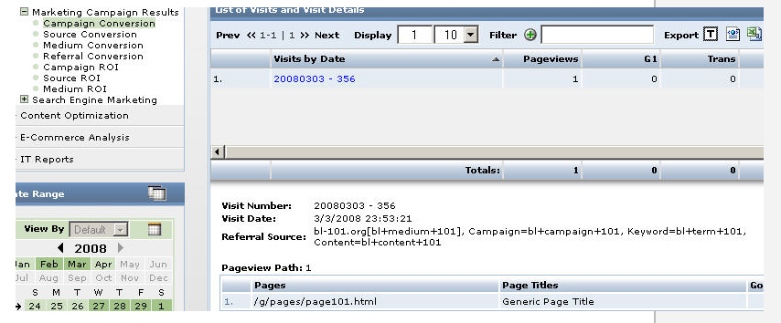

Campagnes et visiteurs associés
Urchin 6 fournit des rapports détaillés sur les campagnes associées à votre site. Ces rapports sont accessibles via le menu Rapports -> Optimisation du marketing -> Résultats de la campagne marketing. Pour obtenir la liste des visiteurs qui ont atteint votre site via une campagne donnée :
Ouvrez la page Tous les rapports -> Optimisation du marketing -> Résultats de la campagne marketing -> Conversion par campagne (ou Conversion par source, Conversion par support, Conversion par lien).
- Cliquez sur le signe "+" à côté d'une des campagnes (naturelle, par exemple).
Cliquez sur le bouton "Options d'analyse" (
 ) en regard de l'un des moteurs de recherche (par exemple "google[naturel]") et sélectionnez l'option "Détail de l'historique du visiteur".
) en regard de l'un des moteurs de recherche (par exemple "google[naturel]") et sélectionnez l'option "Détail de l'historique du visiteur". - Cliquez sur l'identifiant d'un visiteur.
Des informations sur le site référent/la campagne s'affichent accompagnées de la liste des visites.
